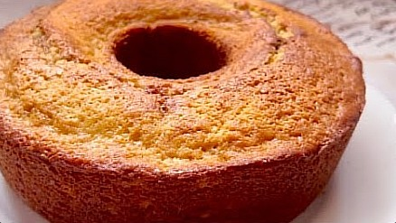

Turma 27
Aula fron-end exercício 1
Receita

Acesso rapido
Sobre o prato
Bolo de Banana
Receita esquecida que fazia sucesso na minha família! Fácil e delicioso bolo de banana
Ingredientes
- 3 ovos
- 3 colheres sopa de margarina (60g)
- 1 xícara chá de açúcar (145g)
- 3 bananas maduras (185g)
- 1 e 1/2 xícara de chá de farinha de trigo (150g)
- 1/2 xícara chá de amido de milho (60g)
- 1 colherzinha chá de sal
- 1 colher sopa de (14g)
Para polvilhar:
- 3 colheres sopa de açúcar
- 1 colherzinha chá de sal